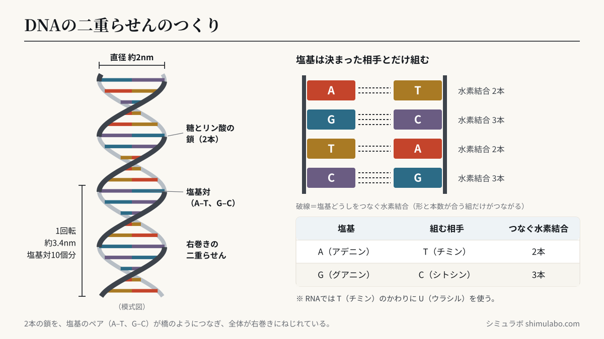
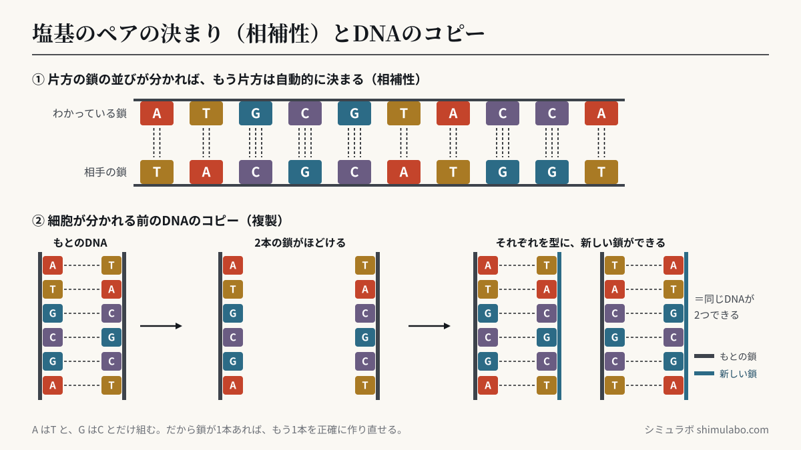

二重らせんとは
DNAは2本の鎖がねじれて結びついた「二重らせん」構造。鎖の間をつなぐ「塩基」はA-T、G-Cの組でペアになります。この4文字の並び順が、私たちの体をつくる遺伝情報そのもの。1953年にワトソンとクリックが構造を解明しました。






図はタップすると大きく表示されます。資料やSNSに使うときは、出典「シミュラボ」とページのURLを添えてください。
数字で見るDNA
| 項目 | 数値 |
|---|---|
| らせんの直径 | 約2ナノメートル（髪の毛の太さの約5万分の1） |
| 1回転の長さ | 約3.4ナノメートル＝塩基対10個分 |
| ヒトゲノムの長さ | 約31億塩基対 |
| 1つの細胞に入っている全長 | 伸ばすと約2メートル |
| 体全体のDNAをつなぐと | 太陽と地球の往復数十回分（細胞約37兆個） |
4文字の暗号と「相補性」
塩基はA（アデニン）・T（チミン）・G（グアニン）・C（シトシン）の4種類。AはTと、GはCとだけ手をつなぐため、片方の鎖が分かればもう片方は自動的に決まります。この相補性のおかげで、細胞分裂のときにDNAを正確にコピーできます。1953年のワトソンとクリックの発見は、この構造から「遺伝のコピー機構」まで一気に説明した点が画期的でした。
よくある質問
- 色の意味は？
- 塩基対をイメージした色分けです（A-T／G-C）。
- データは送信されますか？
- いいえ。すべてブラウザ内で動きます。
- らせんは右巻き？左巻き？
- 自然界のDNA（B型）は右巻きです。図解やロゴで左巻きに描かれているものは実は間違い、という小ネタも有名です。
- RNAとの違いは？
- RNAは基本的に1本鎖で、TのかわりにU（ウラシル）を使います。DNAが「保存用の設計図」、RNAが「作業用のコピー」という役割分担です。